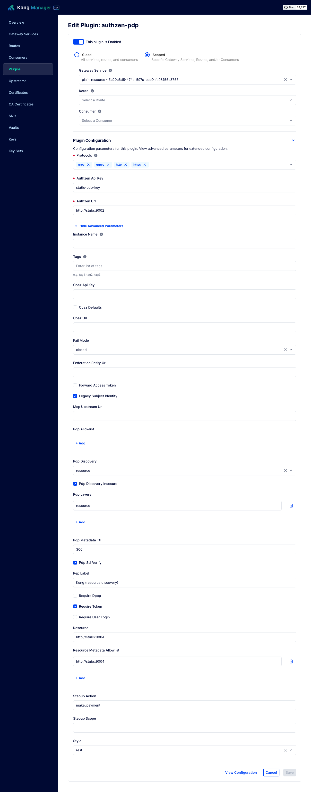
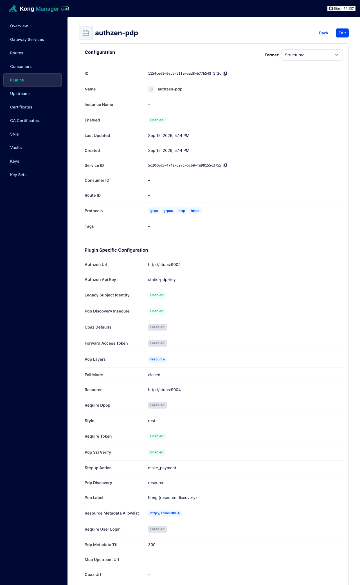

The Kong plugin
authzen-pdp is a Kong plugin that speaks AuthZEN 1.0 to a PDP on every request: REST and MCP request mapping, token and actor-claim extraction, RFC 9470 step-up challenges, and RFC 9728 and AuthZEN metadata discovery, natively in Lua. What needs a JOSE library, DPoP verification, per-tool-call COAZ authorisation and federation, it delegates to coaz-pep. Every knob is plugin configuration on a route or service, and Kong Manager shows it.
Install
DB-less: mount the plugin directory and tell Kong about it. The module path Kong looks for is kong.plugins.authzen-pdp.handler.
# kong.conf, or environment
KONG_PLUGINS=bundled,authzen-pdp
KONG_LUA_PACKAGE_PATH=/opt/?.lua;;# compose: the demo's Kong, complete
kong:
image: kong:3.9
environment:
KONG_DATABASE: "off"
KONG_DECLARATIVE_CONFIG: /kong/kong.yml
KONG_PLUGINS: bundled,authzen-pdp
KONG_LUA_PACKAGE_PATH: /opt/?.lua;;
KONG_PROXY_LISTEN: 0.0.0.0:8000
KONG_ADMIN_LISTEN: "off"
KONG_LOG_LEVEL: notice
KONG_PROXY_ERROR_LOG: /dev/stderr
volumes:
- ./kong/kong.yml:/kong/kong.yml:ro
- ../gateways/kong/authzen-pdp:/opt/kong/plugins/authzen-pdp:ro
ports:
- "8000:8000"The plugin in Kong Manager
Kong Manager draws the plugin's form from schema.lua, so every field below appears here with its default pre-filled, and the required ones marked. Captured from the demo's Kong with Kong Manager OSS turned on (KONG_ADMIN_GUI_LISTEN), against the DB-less configuration below.

authzen_url and authzen_api_key. Kong Manager title-cases the names; the tables below use the names as written in configuration.
Every field
Grouped as they are used, not as the schema lists them. Types are the schema's; ref marks a field that accepts a Kong vault reference such as {vault://env/authzen-url} instead of a literal.
The PDP
| Field | Type · default | Meaning |
|---|---|---|
authzen_url required · ref | string | The static PDP's base URL. With discovery off the AuthZEN default paths are appended; with it, the fallback every mode ends at, and the one PDP that receives the key. Its origin is always permitted, even over http. |
authzen_api_key required · ref | string | Sent as Authorization: Bearer to authzen_url only. A discovered PDP never receives it. |
pdp_ssl_verify | boolean · true | TLS verification on PDP and coaz-pep calls. A PEP that accepts any certificate has no integrity on the decision it enforces; set false only against self-signed certificates in development. |
The route
| Field | Type · default | Meaning |
|---|---|---|
pep_label | string · kong-pep | Names this PEP in denials and the X-PDP-PEP response header, e.g. PEP#2 (Bank API edge). |
style | rest | mcp · rest | rest maps method and path to an evaluation; mcp treats the route as an MCP edge and authorises JSON-RPC. |
require_token | boolean · true | Reject a request that carries no readable access token. |
require_dpop | boolean · false | Enforce the RFC 9449 sender constraint. Needs coaz_url: the plugin cannot verify a proof signature, and configuration is refused without it. |
require_user_login | boolean · false | Require a logged-in end user (X-User-Token); absent, a 401 login_required challenge. |
stepup_scope | string | For stepup_action, the user's token must carry this scope; if not, a 401 insufficient_scope challenge. |
stepup_action | string · make_payment | The action the step-up applies to. |
forward_access_token | boolean · false | Forward the raw token to the PDP as context.access_token, so the PDP can verify the signature, read cnf, score the client. Only when the PDP connection is TLS and authenticated. |
resource | string | The protected resource's identifier (RFC 8707), the key discovery starts from. An mcp route without one uses mcp_upstream_url; a rest route without one uses the static PDP. |
Delegation to coaz-pep
| Field | Type · default | Meaning |
|---|---|---|
coaz_url | string | coaz-pep's HTTP check API, e.g. http://coaz-pep:9192. On an mcp route, tools/call is authorised per the tool's mapping by the engine; also where DPoP proofs are verified. |
coaz_api_key ref | string | The engine's CHECK_API_TOKEN, sent as a bearer. |
mcp_upstream_url | string | The MCP server whose tools/list declares the mappings; the engine reaches it directly for discovery, so it must be on the engine's MCP_UPSTREAM_ALLOWLIST. |
federation_entity_url | string | Makes the route the resource's federation face: /.well-known/openid-federation and /.well-known/oauth-protected-resource (with any identifier path) are relayed from coaz-pep at this URL, which holds the key. Everything else on the route is untouched. |
coaz_defaults | boolean · false | Authorise tools that declare no mapping against the COAZ-MCP binding's default mapping, as the binding requires. Off keeps the non-conformant pass-through deployed routes expect. |
PDP discovery
| Field | Type · default | Meaning |
|---|---|---|
pdp_discovery | off | authzen | resource · off | off: the static PDP, default paths, no fetch. authzen: read authzen_url's /.well-known/authzen-configuration. resource: read the route's resource's RFC 9728 document for authzen_policy_decision_points, then that PDP's metadata, falling back to authzen_url. No federation mode: a trust chain cannot be validated without a JOSE verifier; a route that must take the federation's word belongs behind coaz-pep. |
pdp_metadata_ttl | number · 300 | Cache TTL, seconds, for resource and PDP metadata. Must be greater than zero. |
pdp_allowlist | array of string | Prefixes a discovered PDP must match; authzen_url is always permitted. Empty means any https PDP a resource names. |
resource_metadata_allowlist | array of string | Prefixes a route's resource must match before its metadata is fetched. Empty means any. |
pdp_discovery_insecure | boolean · false | Allow http for discovered URLs. Dev only; authzen_url's own origin is always trusted over http. |
Layers and fail mode
| Field | Type · default | Meaning |
|---|---|---|
pdp_layers | array of string · ["resource"] | The ordered PDPs to ask, every one of which must permit: static (the configured authzen_url, regardless of discovery), resource (what discovery finds for this route's resource), or a PDP identifier. Each entry may carry its own failure mode: "https://estate.example fail-open". The first that does not permit is the answer. An entry the plugin cannot read fails the route closed. Passed to coaz-pep on MCP routes. |
fail_mode | closed | open · closed | What a layer does when its PDP cannot be reached, unless the layer says for itself. closed denies with a 503. open skips the layer; if every layer was skipped the request is permitted, and any permit that skipped one carries X-PDP-Fail-Open. A refusal (allowlist) never opens; a deny is a decision, not a failure. |
Transport and compatibility
| Field | Type · default | Meaning |
|---|---|---|
protocols | http, https, grpc, grpcs | Kong's own field: which protocols the plugin runs on. |
legacy_subject_identity | boolean · true | Also send the non-standard subject.identity beside AuthZEN's subject.id, so upgrading the gateway alone cannot break a policy still reading the old field. Set false once policies read subject.id. |
One cross-field check runs at configuration time: require_dpop without coaz_url is refused with the message require_dpop needs coaz_url: this plugin cannot verify a DPoP proof signature itself, so verification is delegated to coaz-pep.
Complete configurations
A REST API with discovery, layers and the federation face
_format_version: "3.0"
services:
- name: bank-api
url: http://bank-api:8070
routes:
- name: bank
paths: ["/bank"]
strip_path: true
plugins:
- name: authzen-pdp
config:
authzen_url: "{vault://env/authzen-url}" # always the fallback, always permitted
authzen_api_key: "{vault://env/authzen-api-key}"
pep_label: "PEP#2 (Bank API edge)"
style: rest
require_token: true
require_dpop: true # verified by coaz-pep
coaz_url: http://coaz-pep:9192
coaz_api_key: "{vault://env/coaz-api-key}"
stepup_scope: "banking:payments:transfer"
stepup_action: "make_payment"
pdp_discovery: resource
resource: https://api.bank.example
pdp_allowlist: ["https://pdp.bank.example", "https://estate-pdp.bank.example"]
resource_metadata_allowlist: ["https://api.bank.example"]
pdp_metadata_ttl: 300
forward_access_token: true
pdp_layers: ["https://estate-pdp.bank.example fail-open", "resource"]
fail_mode: closed
federation_entity_url: http://coaz-pep:9192 # the two well-known documents, relayed
legacy_subject_identity: falseAn MCP edge, delegating tool-call authorisation
- name: bank-mcp
url: http://bank-mcp:8090
routes:
- name: mcp-edge
paths: ["/mcp"]
strip_path: false
plugins:
- name: authzen-pdp
config:
authzen_url: "{vault://env/authzen-url}"
authzen_api_key: "{vault://env/authzen-api-key}"
pep_label: "PEP#1 (MCP edge)"
style: mcp
require_token: true
require_user_login: true
coaz_url: http://coaz-pep:9192 # tools/call authorised per x-coaz-mapping by the engine
coaz_api_key: "{vault://env/coaz-api-key}"
mcp_upstream_url: http://bank-mcp:8090/mcp
coaz_defaults: true
pdp_discovery: resource # the MCP server is the resource; mcp_upstream_url is its identifier
pdp_allowlist: ["https://pdp.bank.example"]
resource_metadata_allowlist: ["http://bank-mcp:8090"]The demo's Kong, as it runs
The whole of demo/kong/kong.yml: one route in front of the plain stub, discovering the PDP from that resource's RFC 9728 document.
_format_version: "3.0"
services:
- name: plain-resource
url: http://stubs:9004
routes:
- name: bank
paths: ["/bank"]
strip_path: true
plugins:
- name: authzen-pdp
config:
authzen_url: http://stubs:9002
authzen_api_key: static-pdp-key
pep_label: "Kong (resource discovery)"
style: rest
require_token: true
pdp_discovery: resource
resource: http://stubs:9004
pdp_discovery_insecure: true
resource_metadata_allowlist: ["http://stubs:9004"]What it puts on the wire
| Where | Header | Meaning |
|---|---|---|
| proxied request, on permit | X-Auth-Principal, X-Auth-Agent, X-Auth-Scope, X-Auth-Acr | The decided identity and the authentication context the AS asserted, so a resource server records the delegation chain rather than inferring a channel from a username. |
| response | X-PDP-PEP, X-PDP-Decision, X-PDP-Action, X-PDP-Reason | Which PEP decided, what, for which action, and why. |
| response, on a fail-open permit | X-PDP-Fail-Open | The layers that were skipped. |
| response, on deny | status, WWW-Authenticate, JSON body | The same challenge vocabulary as every other PEP here: 401 login_required, insufficient_scope (RFC 9470), invalid_token; 403 for a plain deny; 503 when a PDP could not be reached or a refusal applied. Body {"error":"authorization_failed","pep":…,"reason":…}, or the JSON-RPC error coaz-pep rendered on an MCP route. |
| to the PDP | context.resource_metadata, context.resource_metadata_source, context.request, context.access_token | The resource's document verbatim and where it came from, the endpoint hit, and the raw token when the route allows. The plugin enforces none of it. |
What is delegated, and why
- DPoP. A Kong plugin has no JOSE verifier. Comparing the proof's JWK thumbprint to
cnf.jktwithout checking the proof's signature proves nothing, because the proof carries the very JWK being compared. So the proof goes to coaz-pep's/v1/dpop/verify. - COAZ tool calls. Mappings are CEL-shaped and discovered from
tools/list; one implementation of the profile for every gateway, so two renderings of one decision cannot drift. The plugin relays the engine's JSON-RPC error verbatim. - Federation. Same reason as DPoP: no signature verification, no trust chain. Delegated
tools/callchecks already run the engine's discovery, federation included, and the plugin passes an explicitresourceso both PEPs key off one identifier. - The federation face. The plugin cannot sign, so it relays the two well-known documents from coaz-pep, which holds the key.
The plugin is tested with busted against a mocked Kong (gateways/kong/spec/) and holds a coverage floor of 97%.